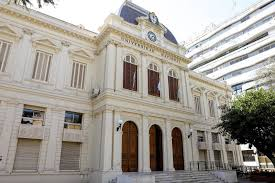

Educación Virtual
La educación virtual utiliza plataformas digitales para enseñar. Es flexible, accesible y permite aprender desde cualquier lugar con conexión a internet.
- Clases online: a través de Zoom, Meet u otras plataformas.
- Cursos autogestionados: aprendizaje a tu ritmo en plataformas como Coursera o Moodle.
- Capacitación profesional: formación continua para adultos en línea.
- Educación a distancia: carreras completas dictadas por universidades o institutos.
- Herramientas digitales: uso de videos, juegos educativos y recursos interactivos.
Para mas información existen distintas escuelas para estudiar por si te interesa
algunos ejemplos serian:
La universiad UNLP
La Universidad Nacional de La Plata (UNLP), una de las mayores universidades de Argentina, fue fundada en 1905 por Joaquín Víctor González. La sede principal está en Avenida 7 N° 776, La Plata, Provincia de Buenos Aires.

Para mas información accede a su pagina
existen paginas para la inscripción virtuales
Volver